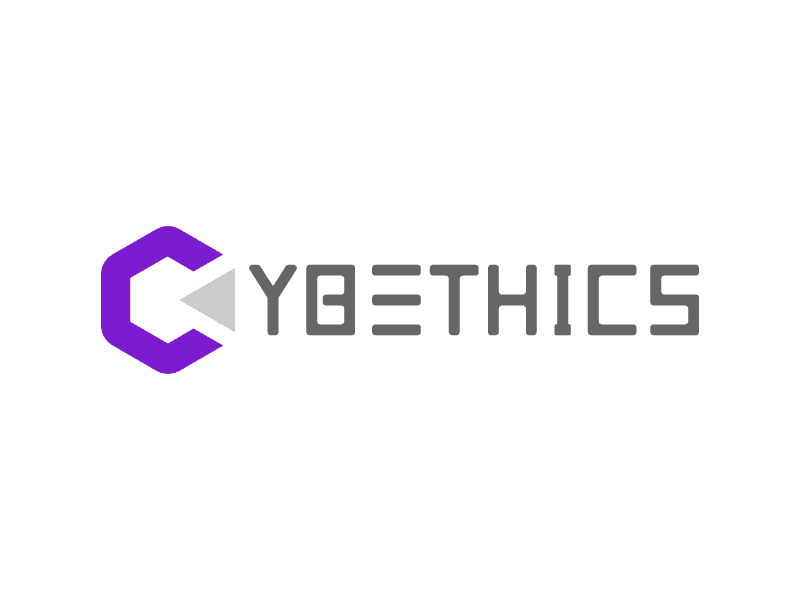

- Employee Well-Being Programs: Prioritise the health and well-being of employees through wellness
programs, promoting work-life balance, and creating a supportive work environment
- Flexible Work Arrangements: Offer flexible work arrangements, such as remote work or flexible hours,
that allow employees to manage their health needs, attend medical appointments, or accommodate
caregiving
responsibilities
- Promote Health Awareness: Raise awareness about important health issues, share health tips, and
promote
preventive healthcare practices among employees and the wider community
- Job Creation: Actively create job opportunities, contribute to economic growth by hiring and providing
employment.
- Skill Development: Support initiatives for skill development and training programs to enhance
employability.
- Fair & Inclusive Employment Practices: Foster a diverse and inclusive work environment, promote equal
opportunities, respect human rights, and prohibit discrimination.
- Corporate Social Responsibility (CSR): Implement CSR initiatives supporting community development,
education, and entrepreneurship.
- Technological Innovation: Drive cutting-edge software solutions, improving efficiency, productivity,
and sustainability across industries.
- Digital Connectivity: Enhance access to affordable and reliable internet services, empowering
communities, bridging the digital divide, and enabling economic opportunities.
- Partnerships for Innovation: Collaborate with industry, research, and government partners to foster
innovation ecosystems, driving research and development to address societal challenges.
- Internal Sustainability Practices: Implement eco-friendly policies for waste management, energy
efficiency, and resource conservation. Encourage sustainable commuting methods like public
transportation, carpooling, or cycling.
- Advocacy and Policy Engagement: Promote sustainable urban development through advocacy, stay informed
about local policies, engage in public consultations, and advocate for public transportation,
sustainable infrastructure, and inclusive urban design.
- Technology Solutions: Develop software applications and platforms for sustainable cities, including
public transportation promotion, smart city management, citizen engagement, and urban planning
facilitation.
- Internal Sustainability Practices: Implement eco-friendly policies for waste management, energy
efficiency, and resource conservation. Encourage sustainable commuting methods like public
transportation, carpooling, or cycling.
- Advocacy and Policy Engagement: Promote sustainable urban development through advocacy, stay informed
about local policies, engage in public consultations, and advocate for public transportation,
sustainable infrastructure, and inclusive urban design.
- Technology Solutions: Develop software applications and platforms for sustainable cities, including
public transportation promotion, smart city management, citizen engagement, and urban planning
facilitation.
- Internal Sustainability Practices: Implement eco-friendly policies for waste management, energy
efficiency, and resource conservation. Encourage sustainable commuting methods like public
transportation, carpooling, or cycling.
- Advocacy and Policy Engagement: Promote sustainable urban development through advocacy, stay
informed about local policies, engage in public consultations, and advocate for public transportation,
sustainable infrastructure, and inclusive urban design.
- Technology Solutions: Develop software applications and platforms for sustainable cities, including
public transportation promotion, smart city management, citizen engagement, and urban planning
facilitation.
- Employee Well-Being Programs: Prioritise the health and well-being of employees through wellness
programs, promoting work-life balance, and creating a supportive work environment
- Flexible Work Arrangements: Offer flexible work arrangements, such as remote work or flexible hours,
that allow employees to manage their health needs, attend medical appointments, or accommodate
caregiving
responsibilities
- Promote Health Awareness: Raise awareness about important health issues, share health tips, and
promote
preventive healthcare practices among employees and the wider community
- Job Creation: Actively create job opportunities, contribute to economic growth by hiring and
providing
employment.
- Skill Development: Support initiatives for skill development and training programs to enhance
employability.
- Fair & Inclusive Employment Practices: Foster a diverse and inclusive work environment, promote
equal
opportunities, respect human rights, and prohibit discrimination.
- Corporate Social Responsibility (CSR): Implement CSR initiatives supporting community development,
education, and entrepreneurship.
- Technological Innovation: Drive cutting-edge software solutions, improving efficiency, productivity,
and sustainability across industries.
- Digital Connectivity: Enhance access to affordable and reliable internet services, empowering
communities, bridging the digital divide, and enabling economic opportunities.
- Partnerships for Innovation: Collaborate with industry, research, and government partners to foster
innovation ecosystems, driving research and development to address societal challenges.
- Ethical Business Practices: Foster integrity and ethical conduct, strong governance, anti-corruption
measures, and transparency. Promote fair practices, responsible procurement, compliance, and human
rights respect.
- Data Security and Privacy: Prioritize data security, robust cybersecurity, data protection
compliance, and responsible data handling.
- Promote Digital Rights: Advocate for digital rights, including freedom of expression, privacy, and
access. Support initiatives for digital literacy, inclusivity, and bridging the digital divide.
- Transparency and Accountability: Transparent tax practices, financial reporting, robust accounting
standards, and relevant tax information disclosure.
